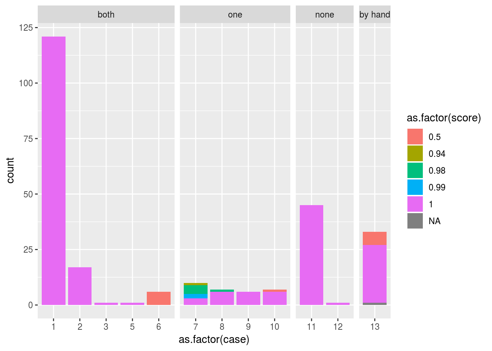
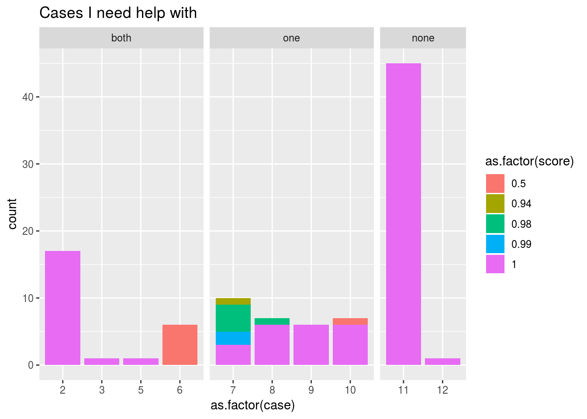

18 Taxonomic Name Resolution when Importing Data in to BETY
Name Resolution
When users have plant trait data that they want to enter in to the database, the data needs to attributed to a specific species database record. When the user has no other information (such as ID codes like the USDA and FIA codes) the only way to match the species in the data with species entry in the database is through matching of scientific names.
But it may be the case that the accepted scientific name has changed since the data was collected (and/or published), or that the data itself contains errors (typos or otherwise) such that the names in the data are not matching with anything that has already been entered in to BETY. It is also the case that BETY does not have a complete record.
At this point we need to employ additional tools to help us in resolving taxonomic names. Already in the PEcAn code there exists
match_species_id: But this cannot account for fuzzy matching of names (ie spelling errors) and synonyms.94.match.species: This code is specific to importing data from thr TRY database and experiments with some partial matching through grep statements, but again does not account for synonyms.
Outside of PEcAn, there is the Taxonomic Name Resolution Service
Additionally, there is an R package taxize which, among other things, provides an R interface between TNRS and R.
I recommend checking out their vignettes - you can also just access them on their github.
Building a Tropical PFT
My goal is not only to import trait data, but to build a PFT that I can used to do runs in the tropics. (How general should this PFT be? That’s a good question!)
Right now I’m using a clone of the tropical PFT that was made to be used with FATES. Thus it contains all the imported BETY entries from the ForestGEO Neotropical tree database (http://ctfs.si.edu/webatlas/neotropicaltree/) and more. There are currently 22286 species linked to the PFT, 20811 of which are the ForestGEO entries.
If I’m importing data with species that are not in the existing PFT, I need to decide if they should be added. And I suppose I should also make sure there aren’t any species in the PFT that shouldn’t be there. This is something that I have no expertise in so I would like advice. Below I’m loading in all the spcies names from my PFT (id = 1000000131)
pftid <- 1000000131
PFT_species <- tbl(bety, "pfts") %>% dplyr::rename(pft_id = id) %>% filter(pft_id == pftid) %>%
inner_join(., tbl(bety, "pfts_species"), by = "pft_id") %>%
inner_join(., tbl(bety, "species") %>% dplyr::rename(specie_id = id), by = "specie_id") %>%
dplyr::select(one_of("pft_id", "name", "specie_id", "genus", "species", "scientificname", "notes")) %>%
collect()
# Check that all the ForestGEO species are in the PFT (they are)
nForestGEO <- tbl(bety, "species") %>% filter(str_detect(notes, "ForestGEO")) %>% collect() %>% nrow()
PFT_species %>% filter(str_detect(PFT_species$notes, "ForestGEO")) %>% nrow() == nForestGEO## [1] TRUEPFT_species$notes <- NULL18.1 What I need help with
I need to import trait data in to the database and I need to match the species names in the data to the records in BETY. Furthermore, I need to decide if I need to add records or change existing records in BETY.
I’ll refer to the species name in the data set as “submitted name” - I run these names through the TNRS to see if returns spelling corrections or a different “accepted name.”
For example:
If my submitted name is "Simaroubu glauca" (which I misspelled from Simarouba glauca)
submit_name <- "Simaroubu glauca"
tnrs(query = submit_name)## Calling http://taxosaurus.org/retrieve/4976dd6048ff2aa6ec7c29db864a93f1## submittedname acceptedname sourceid score matchedname
## 1 Simaroubu glauca Simarouba amara iPlant_TNRS 0.98 Simarouba glauca
## authority uri
## 1 Aubl. http://www.tropicos.org/Name/29400090The iPlant TNRS matches the name Simarouba glauca but then provides an accepted name of Simarouba amara.
When I use the name resolving tools, and try to match the submitted and accepted names to BETY I come up with 13 different cases that can potentially arrise. I’ll go through each one in detail below:
#------------------------------------------------------------------------------#
# Both the submitted and accepted names in BETY
# Check if they equal each other
submit_accept <- sp$submit_bety_id[i] == sp$accept_bety_id[i]
# They equal each other
case01 <- submit_bety & accept_bety & submit_accept & accept_PFT # Best case, don't need to do anything.
case02 <- submit_bety & accept_bety & submit_accept & !accept_PFT
# They don't equal one another
case03 <- submit_bety & accept_bety & !submit_accept & submit_PFT & accept_PFT
case04 <- submit_bety & accept_bety & !submit_accept & submit_PFT & !accept_PFT
case05 <- submit_bety & accept_bety & !submit_accept & !submit_PFT & accept_PFT
case06 <- submit_bety & accept_bety & !submit_accept & !submit_PFT & !accept_PFT
#------------------------------------------------------------------------------#
# Only one name in BETY
# Submitted name not in bety, accepted name in BETY
case07 <- !submit_bety & accept_bety & accept_PFT
case08 <- !submit_bety & accept_bety & !accept_PFT
# Submitted name in bety, accepted name not in BETY
case09 <- submit_bety & submit_PFT & !accept_bety
case10 <- submit_bety & !submit_PFT & !accept_bety
#------------------------------------------------------------------------------#
# None of the names are in BETY
case11 <- !submit_bety & !accept_bety & toupper(sp$submit_name[i]) == toupper(sp$accept_name[i])
case12 <- !submit_bety & !accept_bety & toupper(sp$submit_name[i]) != toupper(sp$accept_name[i])
#------------------------------------------------------------------------------#
# Special unlucky number 13 case that the TNRS could not find an accepted name.
# Or TNRS returned a blank which is super lame and confusing.
# These will need to be resolved by hand.
case13 <- !accept_name_exists
if(case13){
case01 = case02 = case03 = case04 = case05 = case06 = case07 = case08 =
case09 = case10 = case11 = case12 = FALSE
}Using a list of 131 species from trait data that I need to import in to BETY (from various sources), I determined the case for each name in a separate script. The result of this analysis are in the file /fs/data3/ecowdery/ED.Hydro/parameters/constraint_calculations/constraint_data/species_out.csv.
species_out = read.csv(file = "/fs/data3/ecowdery/ED.Hydro/parameters/constraint_calculations/constraint_data/species_out.csv",
stringsAsFactors = FALSE) %>%
select(-one_of(c("X", "X.1")))
species_out <- species_out %>%
mutate(category = case_when(case <= 6 ~ "both",
6 < case & case <= 10 ~ "one",
10 < case & case <= 12 ~ "none",
case == 13 ~ "by hand"))
species_out$category <- factor(species_out$category, levels = c("both", "one", "none", "by hand"))
# Here I color the entries by "score" which is just how "close" the match is
# So the score would go down for a spelling error for example
ggplot(data = species_out) +
geom_bar(aes(x = as.factor(case), fill = as.factor(score))) +
facet_grid(aes(cols = category), scales = "free", space = "free")
# Special case for which the TNRS did not work, I'll get to this later
species_special <- species_out %>% filter(case == 13)
# Entries for which the TNRS did work
species_case <- species_out %>% filter(case != 13)
# dim(species_case)
ggplot(data = species_case %>% filter(case != 1)) +
geom_bar(aes(x = as.factor(case), fill = as.factor(score))) +
ggtitle("Cases I need help with") +
facet_grid(aes(cols = category), scales = "free", space = "free")
Luckily, case 1, the one in which the submitted name and accepted name agree and are in BETY and in the tropical PFT is the predominant case. However, there are a lot of other cases that need sorting through. This is where I need help! <<<<<<< HEAD =======
Specific places I would love opinions: case 3-6 & 9-10
587bb33986f478aaf8a807d85da197600f645a08
Specific places I would love opinions: case 3-6 & 9-10